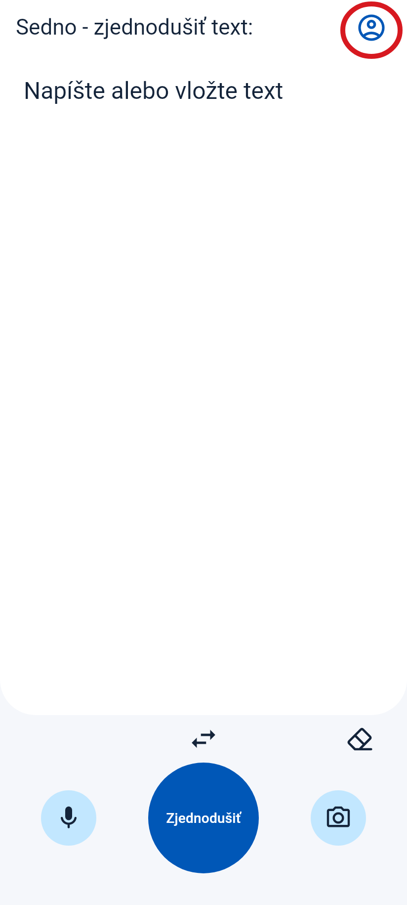
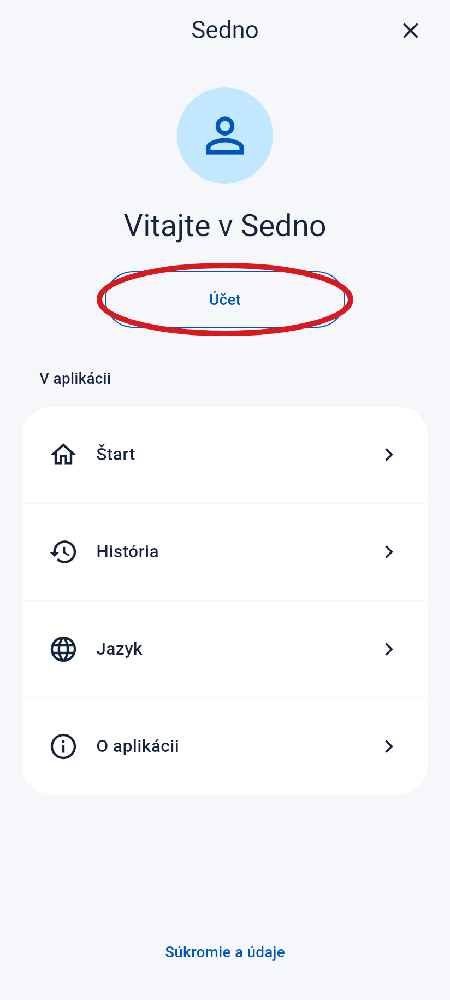
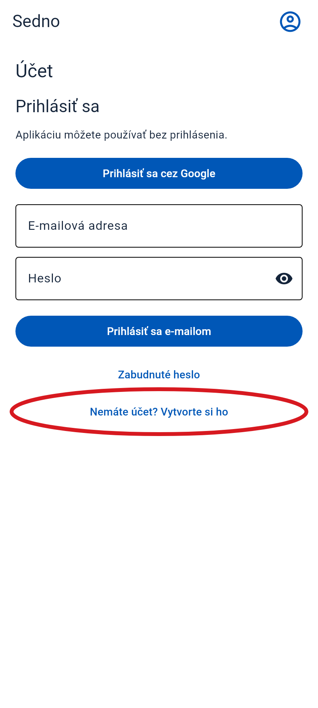
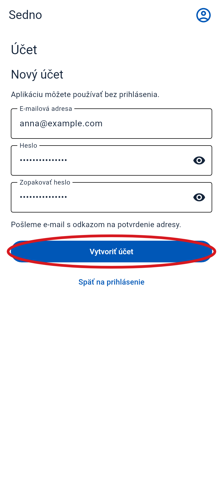
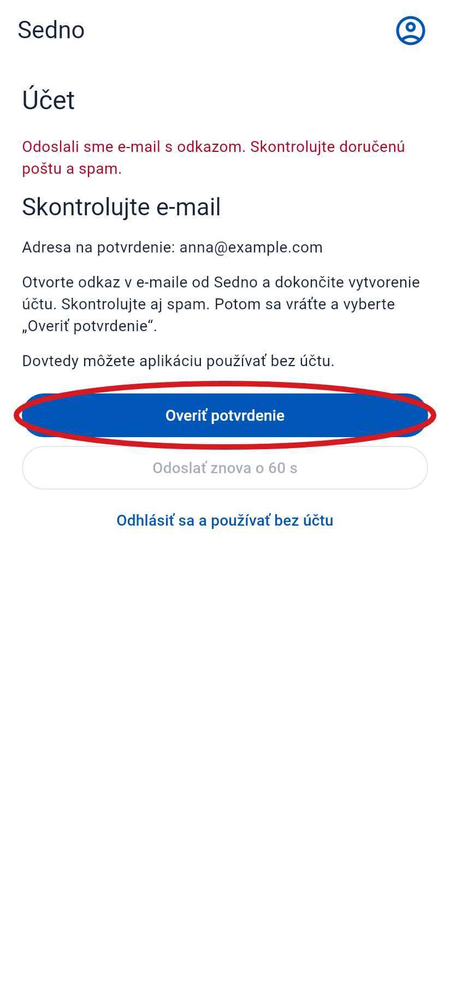
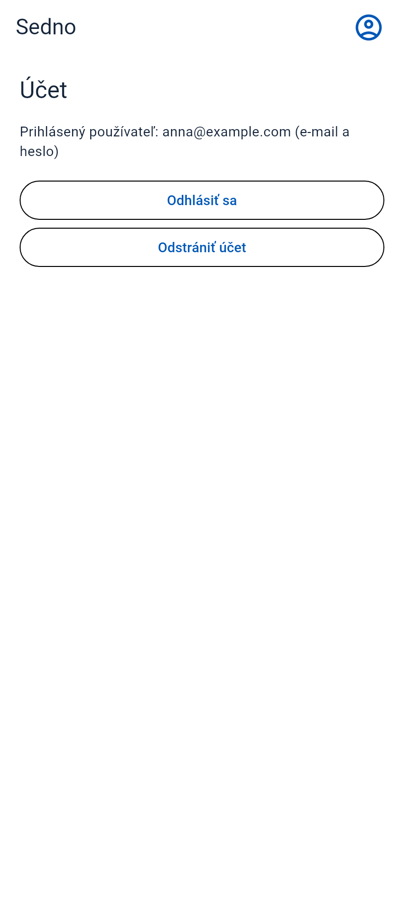

Ako si vytvoriť účet
Otvor Sedno v telefóne. Postupuj podľa týchto krokov.
Červený krúžok ukazuje, kam ťuknúť. Tieto obrazovky sú z aplikácie. E-mail je príklad.
-
1 Otvor menu
Ťukni na ikonu osoby vpravo hore.
Ťukni sem

-
2 Vyber „Účet“
Ťukni na tlačidlo v červenom krúžku.
Ťukni sem

-
3 Vyber vytvorenie účtu
Ťukni na „Nemáte účet? Vytvorte si ho“. Ak tlačidlo nevidíš, potiahni prstom nahor.
Ťukni sem

-
4 Zadaj e-mail a heslo
- Zadaj svoju e-mailovú adresu.
- Vymysli heslo s aspoň 6 znakmi.
- Nižšie zadaj to isté heslo ešte raz.
- Ťukni na „Vytvoriť účet“.

-
5 Otvor svoju e-mailovú schránku
Nájdi správu od Sedna. Pozri sa aj do priečinka Spam. Otvor správu a ťukni na odkaz na potvrdenie e-mailu.
Ťukni sem
Príklad e-mailu
Sedno
Potvrď svoju e-mailovú adresu v Sedne.
Potvrdiť e-mail -
6 Vráť sa do Sedna
Znova otvor Sedno. Ak stále vidíš túto obrazovku, ťukni na „Overiť potvrdenie“.
Ťukni sem

-
7 Hotovo!
Vidíš svoju e-mailovú adresu. Tvoj účet je pripravený.
